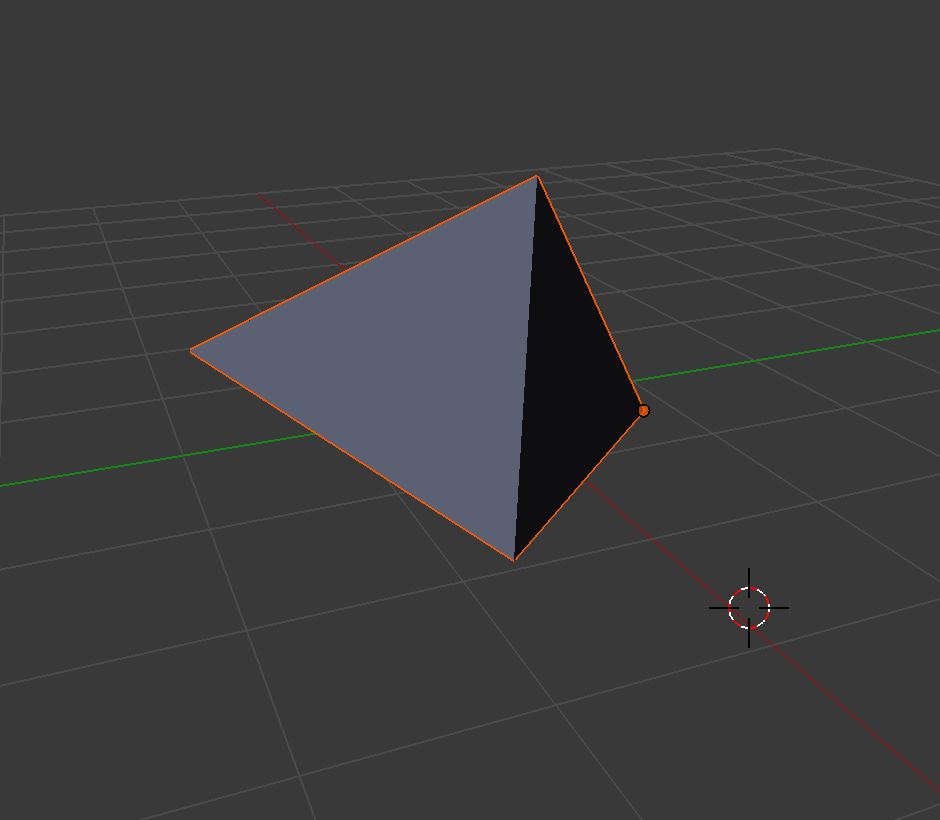
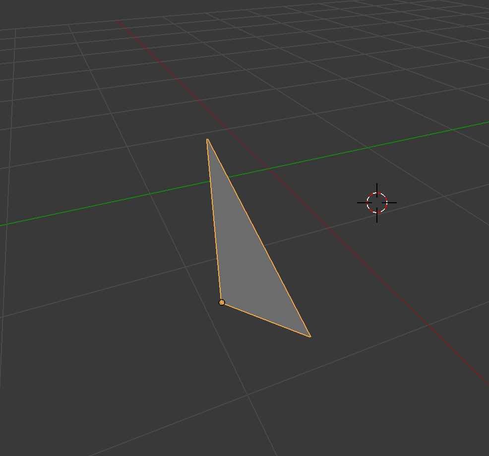
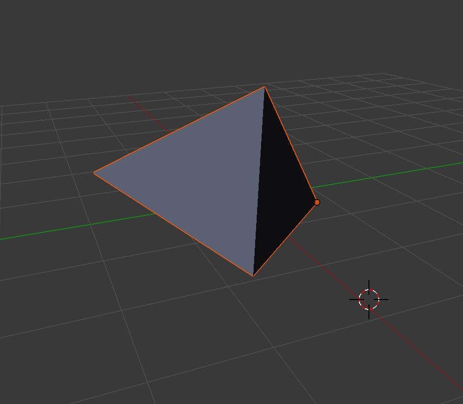
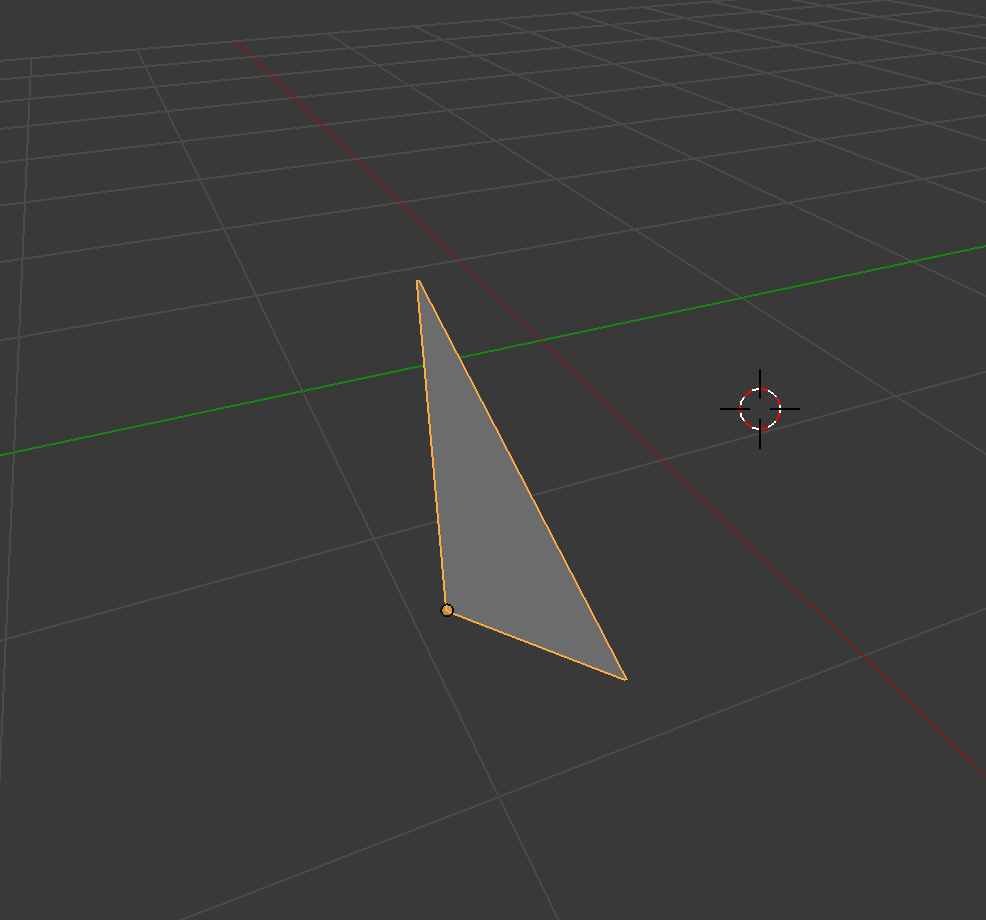

$\langle {\large{\color{red}\zeta}} \rangle$
Wed Sep 1 02:44:14 PDT 2015
woke up pretty early this moring around 9:30am, that weather is hot but it is ok as long as you are in the shadow.
I brushed my teeth and washed my face quickly. I drove down to Santa Clara library, it only took me ten mintues to get there.
There are still a few empty parking spot in the parking lot
Santa Clara library is bright, spacing and quiet. There is lots power plugs around the library so it could save your life if you are constantly running out of juice on your laptop.
Get the lunch around 1:30 in Safe Way, same kind of sandwich which is I usually order.
I'm pretty tired of same kind of lunch every day almost, sometimes I just did not eat any big real lunch any more,
I just get some apple or banana and milk,
Update my latex stuff, add Ring homomorphrism definitin, Coset definition, some example homomorphrism map,
e.g. conjugate map, or $f(x) = f(x + 1)$ are all homomorphrisms
The definitin of homomorphrism is pretty confusing initially, but once you have your example on yor mind, then it is very "simple" concept.
Continue to add feature to the SimpleGame.
Three numbers have to be horizonal, vertical or diagonal on the 2D grid.
The constraint is similar to Sudoku, but only three numbers instead of nine numbers
I miss one corner case which is two numbes on the same row and col, it took me a while to debug that corner case
$\langle {\large{\color{red}\alpha}} \rangle$ Wed Sep 2 11:32:25 PDT 2015
I worke up a little bit late this morning, it is around 11am. The weather is not hot but the sun is strong so you still feel hot
when you are not in the shadow.
Once again, I drove down to the Santa Clara library and sit on the same table nearby the window.
I like to site on the table because it is the brightest spot you can find in the library.
I try to review some algorithms, and the first one was coming to my mind is the permutation of an array problem.
This is not easy question during the interview if you never or don't understand the algorithm well. But the algorithm is very short,
it contains only around less than 10 lines.[depend on how you write it] Initially, I try to figure out whether I can come out the algorithm without any review, I did some draw on the paper and wrote a few characters,
and wrote down the permutation of a few characters, eventually I can rewrite the algorithm.
The algorithm is similar to print out the upper triangle of two dimension array, usually we can use two loops and iterate horizontally and vertically
but we can use recursion to replace one dimension and use only one loop.
woke up pretty early this moring around 9:30am, that weather is hot but it is ok as long as you are in the shadow.
I brushed my teeth and washed my face quickly. I drove down to Santa Clara library, it only took me ten mintues to get there.
There are still a few empty parking spot in the parking lot
Santa Clara library is bright, spacing and quiet. There is lots power plugs around the library so it could save your life if you are constantly running out of juice on your laptop.
Get the lunch around 1:30 in Safe Way, same kind of sandwich which is I usually order.
I'm pretty tired of same kind of lunch every day almost, sometimes I just did not eat any big real lunch any more,
I just get some apple or banana and milk,
Update my latex stuff, add Ring homomorphrism definitin, Coset definition, some example homomorphrism map,
e.g. conjugate map, or $f(x) = f(x + 1)$ are all homomorphrisms
The definitin of homomorphrism is pretty confusing initially, but once you have your example on yor mind, then it is very "simple" concept.
Continue to add feature to the SimpleGame.
Three numbers have to be horizonal, vertical or diagonal on the 2D grid.
The constraint is similar to Sudoku, but only three numbers instead of nine numbers
I miss one corner case which is two numbes on the same row and col, it took me a while to debug that corner case
$\langle {\large{\color{red}\alpha}} \rangle$ Wed Sep 2 11:32:25 PDT 2015
I worke up a little bit late this morning, it is around 11am. The weather is not hot but the sun is strong so you still feel hot
when you are not in the shadow.
Once again, I drove down to the Santa Clara library and sit on the same table nearby the window.
I like to site on the table because it is the brightest spot you can find in the library.
I try to review some algorithms, and the first one was coming to my mind is the permutation of an array problem.
This is not easy question during the interview if you never or don't understand the algorithm well. But the algorithm is very short,
it contains only around less than 10 lines.[depend on how you write it] Initially, I try to figure out whether I can come out the algorithm without any review, I did some draw on the paper and wrote a few characters,
and wrote down the permutation of a few characters, eventually I can rewrite the algorithm.
The algorithm is similar to print out the upper triangle of two dimension array, usually we can use two loops and iterate horizontally and vertically
but we can use recursion to replace one dimension and use only one loop.
printUpperTriangle()
{
for(int col = 0; col < array.length; col++)
{
for(int row = col; row < array.lenght; row++)
{
print(array[col][row];
}
}
}
//Output an upper triangle
but we can use recursion to replace one loop!
printUpperTriangle(int col)
{
for(int row = col; row < array.length; row++)
{
printUpperTriangle(col + 1);
print(array[col][row]);
}
}
Obviously, their output are different, but if we remove all the duplicated elements
from the recursive one, then we can get same upper triangle,[the orders are different]
Around 1pm, I went to get some lunch. The food is terrible in San Jose so I just get a donus, an apple and a milk.
After lunch, I come back to library, and continue to study some algorithms.
$\langle {\large{\color{red}\sigma}} \rangle$ Fri Sep 3 11:43:11 PDT 2015
Last night, I played around with PDF.jS which is JavaScript library to render PDF on browser.
PDF.js is written in CSS, HTML5 and JavaScript, it looks pretty cool tool if you want to render PDF file on brower.
PDF.js depends on node.js so you need to install node.js on your matchine. Currently Chrome can render PDF file natively,
but not Safari or IE. I don't see any compelling reason to use JavaScript to render PDF file since Mathjax is pertty good and popular library to render mathematic formulas.
Sun Sep 6 05:04:21 PDT 2015
Forgot write some note in the last couple days. Today is pretty quiet on the street, I think it is holiday here.
There is not many people on the Korean Caffee, and the steeet is empty. This is the typical Labour Holiday scene.
Last night, there is police check point close the Korean town in El Camino Real.
This is first time I was stoped by the police in CA and they ask for your driver license
I think they try to do some stuff to show the public they are doing drive public safe measure
$\langle {\large{\color{red}\mu}} \rangle$ Tue Sep 7 17:50:42 PDT 2015 Yesterday, I spent most of my time on reviewing algorithms.
I went through quick sort, merge sort and review the algorithm to find the clusters in 2D array
Also, review the reverse the single linked list. I found the single linked list is not easy question actually,
it is easy to make mistaken when you switch two links in two nodes, since you might forget the next link is overwritten
when two links are switched. For quick sort, the algorithm is not hard but the hard part is when you partition the array with privot onlineb, Fortunately, the partition algorithm is very short/simple but it is not obvious.
After lunch, I come back to library, and continue to study some algorithms.
$\langle {\large{\color{red}\sigma}} \rangle$ Fri Sep 3 11:43:11 PDT 2015
Last night, I played around with PDF.jS which is JavaScript library to render PDF on browser.
PDF.js is written in CSS, HTML5 and JavaScript, it looks pretty cool tool if you want to render PDF file on brower.
PDF.js depends on node.js so you need to install node.js on your matchine. Currently Chrome can render PDF file natively,
but not Safari or IE. I don't see any compelling reason to use JavaScript to render PDF file since Mathjax is pertty good and popular library to render mathematic formulas.
Sun Sep 6 05:04:21 PDT 2015
Forgot write some note in the last couple days. Today is pretty quiet on the street, I think it is holiday here.
There is not many people on the Korean Caffee, and the steeet is empty. This is the typical Labour Holiday scene.
Last night, there is police check point close the Korean town in El Camino Real.
This is first time I was stoped by the police in CA and they ask for your driver license
I think they try to do some stuff to show the public they are doing drive public safe measure
$\langle {\large{\color{red}\mu}} \rangle$ Tue Sep 7 17:50:42 PDT 2015 Yesterday, I spent most of my time on reviewing algorithms.
I went through quick sort, merge sort and review the algorithm to find the clusters in 2D array
Also, review the reverse the single linked list. I found the single linked list is not easy question actually,
it is easy to make mistaken when you switch two links in two nodes, since you might forget the next link is overwritten
when two links are switched. For quick sort, the algorithm is not hard but the hard part is when you partition the array with privot onlineb, Fortunately, the partition algorithm is very short/simple but it is not obvious.
e.g. choose the first element of an array as pivot
int[] array = {2, 4, 1, 3}
int pivot = array[0];
int lo = 0;
int big = 0;
for(int i=0; i < array.length; i++)
{
if(array[i] < pivot)
{
swap(array, i, big);
big++;
}
}
swap(array, lo, big-1),
The algorithm is very short but it is not obvious[at least for me]
$\langle {\large{\color{red}\xi}} \rangle$
Sat Sep 12 00:35:25 PDT 2015
In this couple days, I spend some time on two dimension drawing in iOS. There are a lots of stuff to read and digest[break down]
Learn some new stuff. drawing coordinates, view coordinates and hardware coordinates
The center[0, 0] of drawing coordinates is on the center of screen, this is my first time I hear the term "drawing coordiates".
Previously we heard view coordinates and the [0, 0] is usually on Up Left corner of rectangle. Also there is hardware coordinates, and
we usually don't deal with hardware coordinates, the [0, 0] is also on the Up Left corder of a rectangle, but it is different from
the view coordinates[from Apple Doc]
1. Drawing Coordinates is used when the drawing commands are applied
2. View Coordinates is fixed coordinate system relative to the view
3. Hardware Coordinates is the coordinate system represents pixels on the physical screen
Also, there is something called default coordinate system which maps onto view's underlying coordinate system when the graphic contexts establishs the initial drawing coordinate system.

In this couple days, I spend some time on two dimension drawing in iOS. There are a lots of stuff to read and digest[break down]
Learn some new stuff. drawing coordinates, view coordinates and hardware coordinates
The center[0, 0] of drawing coordinates is on the center of screen, this is my first time I hear the term "drawing coordiates".
Previously we heard view coordinates and the [0, 0] is usually on Up Left corner of rectangle. Also there is hardware coordinates, and
we usually don't deal with hardware coordinates, the [0, 0] is also on the Up Left corder of a rectangle, but it is different from
the view coordinates[from Apple Doc]
1. Drawing Coordinates is used when the drawing commands are applied
2. View Coordinates is fixed coordinate system relative to the view
3. Hardware Coordinates is the coordinate system represents pixels on the physical screen
Also, there is something called default coordinate system which maps onto view's underlying coordinate system when the graphic contexts establishs the initial drawing coordinate system.
Sun Sep 13 14:22:57 PDT 2015
I'm working on some simple library which is moving the block around the screen.
There are a few operations that I would like to implement.
1. translation
2. rotation
3. reflection.[vertical, horizonal and diagonal]
4. flip
5. cycle
when I play around with array indexes, there are some interested properties between the index of array and the value of array.
In group theory, permutation group is well known. There is obvious question is how the permutation group and array are related
I'm working on some simple library which is moving the block around the screen.
There are a few operations that I would like to implement.
1. translation
2. rotation
3. reflection.[vertical, horizonal and diagonal]
4. flip
5. cycle
when I play around with array indexes, there are some interested properties between the index of array and the value of array.
In group theory, permutation group is well known. There is obvious question is how the permutation group and array are related
Given C['a', 'b', 'c', 'd']
A[ 3, 1, 0, 2]
B[ 0, 3, 2, 1]
map:[0, 1, 2, 3] to [3, 1, 0, 2]
Map C with the order in A
[0->3]->'d'->0
[1->1]->'b'->1
[2->0]->'a'->2
[3->2]->'c'->3
for( i = 0; i< len; i++)
D[i] = C[A[i]]
Composite two maps
0->3->2
1->1->1
2->0->3
3->2->0
for( i = 0; i< len; i++)
A[A[i]]
Composition three maps becomes Identity map
0->3->2->0
1->1->1->1
2->0->3->2
3->2->0->3
for( i = 0; i< len; i++)
A[A[A[i]]]
for( i = 0; i< len; i++)
A[B[i]]
Mon Sep 14 02:38:43 PDT 2015
I just learn a new vocabulary:
Circumvent [sərkəm ˈvent] find a way around an obstacle
Circumference
Circumcise cut off foreskin of
I just learn a new vocabulary:
Circumvent [sərkəm ˈvent] find a way around an obstacle
Circumference
Circumcise cut off foreskin of
Fri Sep 18 22:01:50 PDT 2015
descend [dɨˈsend] move or fall downward
descendant [dɨˈsendənt] nonu, a person or animal that is descended from a particular ancestor
be descended from, be a direct blood relative from
ancestor [ˈænˌsestər]
descend [dɨˈsend] move or fall downward
descendant [dɨˈsendənt] nonu, a person or animal that is descended from a particular ancestor
be descended from, be a direct blood relative from
ancestor [ˈænˌsestər]
Sun Sep 20 17:59:45 PDT 2015
æ[x00E6]
ʃ[x0283]
prefix [ ] add thing in font of sth or at the beginning of a word, add sth at the beginning of
postfix [ ] append thing at the end of sth, append as a suffix
append [ ] add sth as an attachment or supplement
elaborate [ɨ, lɑbăr ] involving carefully arranged parts or detailed or complicated in design
the key idea of the book is [expressed] in the title and [elaborated] in the text
æ[x00E6]
ʃ[x0283]
prefix [ ] add thing in font of sth or at the beginning of a word, add sth at the beginning of
postfix [ ] append thing at the end of sth, append as a suffix
append [ ] add sth as an attachment or supplement
elaborate [ɨ, lɑbăr ] involving carefully arranged parts or detailed or complicated in design
the key idea of the book is [expressed] in the title and [elaborated] in the text
Mon Sep 21 21:24:13 PDT 2015
Operators in Vim
= indentation e.g gg=G [h =]
c change
d delete
y yank into register (does not change the text)
gu make lowercase
gU make uppercase
! filter through an external program
gq text formatting
g? ROT13 encoding
> shift right
< shift left
zf define a fold
g@ call function set with the 'operatorfunc' option
Left-right motion
h character to the Left
l character to the Right
0 to the first character of the line
^ to the first non-bank character of the line
$ to the end non-bank character of the line
g_ to the last non-bank character of the line
Fri Sep 25 20:41:49 PDT 2015
New Words:
duplicate [adjective] [verb]
record [noun] [verb]
elaborate [adjective] [verb]
execute [noun] [verb]
disguise [] a different appearance in order to conceal one's identity
disguise [] a different appearance in order to conceal one's identity
disguise [] a different appearance in order to conceal one's identity
gust [] noun - a brief or rush wind
disgust [] profound disapproved aroused by sth unpleasant or offensive
elaborate [] involving carefully arranged part or details, detailed and complicated in design and planning
elaborate [] involking carefully arranged parts or details, detailed and complicated in design and planning.
elaborate [] involking carefully arranged parts or details, detailed and complicated in design and planning.
grandiose [ ] impressive and magnificent in appearance or style
liberal - adjective, open to new behavious or opinion and willing to discard traditional values bind [] [past and past participle bound]
visible [] seeable, obversable[obverse] notify, note, notice, noticeable, detectable[detect]
e.g. the action putStrLn "Hello World" with previous result bound to sth.
Have + Object + past participle
e.g. I have my hair cut.[I have cut my hair]
Being + adjective
The structure being + adjective is used to talk about actions and behaviour
e.g. why are you being so silly
e.g. you are being cruel when you hurt others with your words or actions.
e.g. this involes being liberal with your SpaceBar and Enter/Return Key Being + past participle
Being can be followed by a past participle. This structure is used in the passive forms of present and past continuous tenses.
e.g. mother is cooking the dinner
e.g. the dinner is being cooked
e.g. I'm quite sure someone is following me[Active]
e.g. I'm quite sure I'm being followed[Passive]
Being in participle clauses
instead of because/since/as, we sometimes use an abverbial participle clause with being.
e.g. Being late, he could't watch the movie[Becase he is late, he could't watch the movie]
[Therefore, Consequently, For this reason, As a result, Thus] thing have changed recently-which led to people asking the questions
[led to someone asking sth]
lay out the current setup
lines starting with '#'
lines ending with certain strings
sentence starting with capital letter
print all the words separated by white spaces
use pattern matching and regular expression
how to split words separated by one or more whitespace
please [explain] why the merge is necessary
connecting and linking words in English
it is [essiential] to understand linking words, as part of speech, can be used
to combine ideas in writing, and thus ensure that ideas within sentences and
paragraphs are elegantly connected - for the benefit of the reader.
This will help to improve your writing[e.g. essay, comment, summary]
I just learn some interested words:
the words have different pronunciation but same spelling is called heteronym.
show you how to 3d touch in iphone6
pop up little options, quick aciton, message will show you some recent message,
photos let you jump to seflies
right now quick action, message, will show you show recent msg, photo show you recent camera
when i click on weather, wallet let you add a card, note let you cratch, 3d touch make the screen press sensitive
ok, back to quick aciton, news have quick aciton, let you jump to different category,
let pee and pop, and i hold down a email message, if i keep holding down, perk and pop, if i hold down,
if i keep holding down, here is perk and pop, i'm going to athelet, this is perk and pop, let see how 3d toouch affect the keyboard,
the keyboard become track pad, swip through, let me see how 3d touch work in Safari, if you hold down on the link,
this is really neat, this is PC maC, apple called quick acitons,
message will show you some recent message, photo will show your recent photos,
selfies, if i click on, map let you pin current location, note let you
sketch your idea,
Nevertheless,
In conclusion,
In summary, there is not clear case for one tax system compared to another
In Summary, there is not clear cases for one tax system compared to another
Nevertheless,
to some extend,
it is essential to understand connecting and linking words, as parts of speech, can be used to combine sentences and paragraphs in writing,
and thus ensure the idea within the sentences and paragraphs are elegrantly connected
it is essential to understand connecting and linking words, as parts of speech, can be used to combine sentences and paragraph in writing,
and thus ensure the idea within the sentences and paragraphs are elegrantly connected
In summary, there is not clear tax system compared to another
print all the words separated with whitespace
split all the words separated with whitespace
it is essential to understand the connecting and linking words, as parts of speech, can be used to combine sentences and paragraphs in writing,
and thus ensure the idea within the sentences and paragraphs are elegrantly connected
In summary, there is not clear tax system compared to another.
If no input-file is specified, file is read from stdin. Otherwise, ...
[If sth..., sth.... Otherwise...]
If input-file is empty, the method returns false. Otherwise, return true ...
language attribute, language name, file type,
Disable syntax highlighting for code block and inlines, even though when a language attribute is given.
[disable ... for ..., even though something]
somthing, even though when somthing
Remove the whitespace, even though the string is empty.
Return false, even though the input-file is empty.
[something ... even though ...]
split the string separated by whitespace, even though input-file is empty
[something ... even though ...]
numerical entities instead of UTF-8 when the option is selected
[something ... instead of something when ....]
San Francisco Disrupe News
Where do delimiter go?
The null delimiter, whitespace, empty string, null pointer, null reference, null value, zero value, empty value, empty string
split the string with delimiter[default is whitespace] preserving the null delimiter
split's return value
adjective, adverb,
fortuniately, fortuniate, future, fortran, fortune, furniture
The star quantifier[zero or more]
if the split patter is unspecified, the method returns false.
if a file is written by the first action and the file is read by the second action, then the change to the file is visible to the read
[if sth.. and sth.., then the change to the file is visible..]
Sun Sep 27 13:31:14 PDT 2015
Last night, I try to write a simple script to read a text file and surround each line with Html tags.
The script should be fairly to write, but I decide to write it in Haskell.
I knew a bit of Haskll before so I still remember the basic syntax.
In Haskell, there is interactive command line tool called GHCi.
I primarily use the GHCi to get help on many unfamilar functions
:info concat - show the definition of concat function
:load helloworld.hs - compile helloword.hs
:e helloword.hs - edit the helloword.hs[editor has to be set before that, e.g. vim]
:load helloword.hs following by main to run the code
Wed Sep 30 11:50:27 PDT 2015
I went to WallMart this morning to buy a money order.
I ask for 100 cash back and the WallMart employee just give me 100 bill.
I ask him can you give me to 20 bills, he said, sorry, 'we don't have any 20 bills any more'
This is pretty ridiculous behavious.
Here is Why WallMart sucks:
The groceries are crappy. For example, it is extremely hard to find a good apple in WallMart.
The services are poor. For example, they don't have 20 bills for my 100 cash back.
The lines are extremely slow. For example, they don't hire enough cashiers
New words of the day:
cash [] - money in coins or notes
cash in [] - take advantage or exploit [a situation]
cashable [adjective]
cashier [] - a person who collects payments in stores - a person handling payments and receipts in store, bank, or other business.
cache [] - store away in hiding for future use
Fri Oct 2 12:08:51 PDT 2015
Last night, I spent some times on the Play Framework in Scala.
I download it from typesafe and install it, it is pretty smooth.
And I followed Youtube tutorial to get myself start it.
The Youtube tutorial is extremely clear.
I have no Scala experience but I can follow it.
The tutorial teachs:
How to setup The Play Framework in Scana.
How to Run the Hello World in Play Framework.
How to use Intellij to load your Play Framwork project.
How to use template on your Project.
How to create your Models and Controller.
How to link your Models/View/Controllers with your template
The catch is you will get compile error when you just follow the tutorial.
"type Application is not a member of package controllers"
The reason for that is Play 2.4 generate default dependency injected router.
unlike previously, when it used a static router.
You have to options:
1. Remove the routeGenerator from build.sbt so play will generate a static router.
2. Make your controller classes instead of objects, and use dependency injection.
Sun Oct 4 17:41:01 PDT 2015
Update about the Play Framework in Scala
I spend some times on following the Youtube tutorial Play Framwork in Scala, The tutorial is fanstic and recommand everyone should watch the video if you are new to Play Framework in Scala. Unfortunately, I missed some steps on from the tutorial that causes me many hours to debug my code. The error was I use POST instead of GET on routes file, consequently[as a result, therefore] getPersons method can't be called from controller Uploading file is working so far[need full file path on the server, otherwise, new file can't be created]
Sat Dec 5 03:00:24 PST 2015
The Play Framework:
Current Project in github/scala/PlayExample, the project can be opened from Intellij
Run the project:
Goto PlayExample and ./activator run [it will open port localhost port:9000]
New Words:
duplicate [adjective] [verb]
record [noun] [verb]
elaborate [adjective] [verb]
execute [noun] [verb]
disguise [] a different appearance in order to conceal one's identity
disguise [] a different appearance in order to conceal one's identity
disguise [] a different appearance in order to conceal one's identity
gust [] noun - a brief or rush wind
disgust [] profound disapproved aroused by sth unpleasant or offensive
elaborate [] involving carefully arranged part or details, detailed and complicated in design and planning
elaborate [] involking carefully arranged parts or details, detailed and complicated in design and planning.
elaborate [] involking carefully arranged parts or details, detailed and complicated in design and planning.
grandiose [ ] impressive and magnificent in appearance or style
liberal - adjective, open to new behavious or opinion and willing to discard traditional values bind [] [past and past participle bound]
visible [] seeable, obversable[obverse] notify, note, notice, noticeable, detectable[detect]
e.g. the action putStrLn "Hello World" with previous result bound to sth.
Have + Object + past participle
e.g. I have my hair cut.[I have cut my hair]
Being + adjective
The structure being + adjective is used to talk about actions and behaviour
e.g. why are you being so silly
e.g. you are being cruel when you hurt others with your words or actions.
e.g. this involes being liberal with your SpaceBar and Enter/Return Key Being + past participle
Being can be followed by a past participle. This structure is used in the passive forms of present and past continuous tenses.
e.g. mother is cooking the dinner
e.g. the dinner is being cooked
e.g. I'm quite sure someone is following me[Active]
e.g. I'm quite sure I'm being followed[Passive]
Being in participle clauses
instead of because/since/as, we sometimes use an abverbial participle clause with being.
e.g. Being late, he could't watch the movie[Becase he is late, he could't watch the movie]
[Therefore, Consequently, For this reason, As a result, Thus] thing have changed recently-which led to people asking the questions
[led to someone asking sth]
lay out the current setup
lines starting with '#'
lines ending with certain strings
sentence starting with capital letter
print all the words separated by white spaces
use pattern matching and regular expression
how to split words separated by one or more whitespace
please [explain] why the merge is necessary
connecting and linking words in English
it is [essiential] to understand linking words, as part of speech, can be used
to combine ideas in writing, and thus ensure that ideas within sentences and
paragraphs are elegantly connected - for the benefit of the reader.
This will help to improve your writing[e.g. essay, comment, summary]
I just learn some interested words:
the words have different pronunciation but same spelling is called heteronym.
show you how to 3d touch in iphone6
pop up little options, quick aciton, message will show you some recent message,
photos let you jump to seflies
right now quick action, message, will show you show recent msg, photo show you recent camera
when i click on weather, wallet let you add a card, note let you cratch, 3d touch make the screen press sensitive
ok, back to quick aciton, news have quick aciton, let you jump to different category,
let pee and pop, and i hold down a email message, if i keep holding down, perk and pop, if i hold down,
if i keep holding down, here is perk and pop, i'm going to athelet, this is perk and pop, let see how 3d toouch affect the keyboard,
the keyboard become track pad, swip through, let me see how 3d touch work in Safari, if you hold down on the link,
this is really neat, this is PC maC, apple called quick acitons,
message will show you some recent message, photo will show your recent photos,
selfies, if i click on, map let you pin current location, note let you
sketch your idea,
Nevertheless,
In conclusion,
In summary, there is not clear case for one tax system compared to another
In Summary, there is not clear cases for one tax system compared to another
Nevertheless,
to some extend,
it is essential to understand connecting and linking words, as parts of speech, can be used to combine sentences and paragraphs in writing,
and thus ensure the idea within the sentences and paragraphs are elegrantly connected
it is essential to understand connecting and linking words, as parts of speech, can be used to combine sentences and paragraph in writing,
and thus ensure the idea within the sentences and paragraphs are elegrantly connected
In summary, there is not clear tax system compared to another
print all the words separated with whitespace
split all the words separated with whitespace
it is essential to understand the connecting and linking words, as parts of speech, can be used to combine sentences and paragraphs in writing,
and thus ensure the idea within the sentences and paragraphs are elegrantly connected
In summary, there is not clear tax system compared to another.
If no input-file is specified, file is read from stdin. Otherwise, ...
[If sth..., sth.... Otherwise...]
If input-file is empty, the method returns false. Otherwise, return true ...
language attribute, language name, file type,
Disable syntax highlighting for code block and inlines, even though when a language attribute is given.
[disable ... for ..., even though something]
somthing, even though when somthing
Remove the whitespace, even though the string is empty.
Return false, even though the input-file is empty.
[something ... even though ...]
split the string separated by whitespace, even though input-file is empty
[something ... even though ...]
numerical entities instead of UTF-8 when the option is selected
[something ... instead of something when ....]
San Francisco Disrupe News
Where do delimiter go?
The null delimiter, whitespace, empty string, null pointer, null reference, null value, zero value, empty value, empty string
split the string with delimiter[default is whitespace] preserving the null delimiter
split's return value
adjective, adverb,
fortuniately, fortuniate, future, fortran, fortune, furniture
The star quantifier[zero or more]
if the split patter is unspecified, the method returns false.
if a file is written by the first action and the file is read by the second action, then the change to the file is visible to the read
[if sth.. and sth.., then the change to the file is visible..]
Sun Sep 27 13:31:14 PDT 2015
Last night, I try to write a simple script to read a text file and surround each line with Html tags.
The script should be fairly to write, but I decide to write it in Haskell.
I knew a bit of Haskll before so I still remember the basic syntax.
In Haskell, there is interactive command line tool called GHCi.
I primarily use the GHCi to get help on many unfamilar functions
:info concat - show the definition of concat function
:load helloworld.hs - compile helloword.hs
:e helloword.hs - edit the helloword.hs[editor has to be set before that, e.g. vim]
:load helloword.hs following by main to run the code
Wed Sep 30 11:50:27 PDT 2015
I went to WallMart this morning to buy a money order.
I ask for 100 cash back and the WallMart employee just give me 100 bill.
I ask him can you give me to 20 bills, he said, sorry, 'we don't have any 20 bills any more'
This is pretty ridiculous behavious.
Here is Why WallMart sucks:
The groceries are crappy. For example, it is extremely hard to find a good apple in WallMart.
The services are poor. For example, they don't have 20 bills for my 100 cash back.
The lines are extremely slow. For example, they don't hire enough cashiers
New words of the day:
cash [] - money in coins or notes
cash in [] - take advantage or exploit [a situation]
cashable [adjective]
cashier [] - a person who collects payments in stores - a person handling payments and receipts in store, bank, or other business.
cache [] - store away in hiding for future use
Fri Oct 2 12:08:51 PDT 2015
Last night, I spent some times on the Play Framework in Scala.
I download it from typesafe and install it, it is pretty smooth.
And I followed Youtube tutorial to get myself start it.
The Youtube tutorial is extremely clear.
I have no Scala experience but I can follow it.
The tutorial teachs:
How to setup The Play Framework in Scana.
How to Run the Hello World in Play Framework.
How to use Intellij to load your Play Framwork project.
How to use template on your Project.
How to create your Models and Controller.
How to link your Models/View/Controllers with your template
The catch is you will get compile error when you just follow the tutorial.
"type Application is not a member of package controllers"
The reason for that is Play 2.4 generate default dependency injected router.
unlike previously, when it used a static router.
You have to options:
1. Remove the routeGenerator from build.sbt so play will generate a static router.
2. Make your controller classes instead of objects, and use dependency injection.
Sun Oct 4 17:41:01 PDT 2015
Update about the Play Framework in Scala
I spend some times on following the Youtube tutorial Play Framwork in Scala, The tutorial is fanstic and recommand everyone should watch the video if you are new to Play Framework in Scala. Unfortunately, I missed some steps on from the tutorial that causes me many hours to debug my code. The error was I use POST instead of GET on routes file, consequently[as a result, therefore] getPersons method can't be called from controller Uploading file is working so far[need full file path on the server, otherwise, new file can't be created]
Sat Dec 5 03:00:24 PST 2015
The Play Framework:
Current Project in github/scala/PlayExample, the project can be opened from Intellij
Run the project:
Goto PlayExample and ./activator run [it will open port localhost port:9000]
Sun Oct 4 15:04:36 PDT 2015
The power of swap operation
permutation
merge sort
quick sort
merge two sorted lists
generate N unique random numbers
The power of swap operation
permutation
merge sort
quick sort
merge two sorted lists
generate N unique random numbers
XOR is pretty awesome operation in Computer Science
Swap two variables without a tmp variable
int a = 2
int b = 3
int tmp = a; a = b; b = tmp;
XOR algorithm
int a = 0x010
int b = 0x011
a = a ^ b // 0x001 = 0x010 ^ 0x011
b = a ^ b // 0x010 = 0x001 ^ 0x011
a = a ^ b // 0x010 = 0x001 ^ 0x010
Wed Oct 7 16:52:27 PDT 2015
Play around with Scala today, it is pretty "nice" language.
Scala is one of the most pop functional programming out there.
Sat Oct 10 14:59:17 PDT 2015
Play Framework update:
I just found out I make a stupid mistaken on the code, I forgot to register my class from Sorm Instance
and I got "Entity 'entity name' is not registered" error message.
What is working so far for the Play Framework in Scala:
1. Post data to database
2. Query data from database
3. Upload file to server
Play around with Scala today, it is pretty "nice" language.
Scala is one of the most pop functional programming out there.
Sat Oct 10 14:59:17 PDT 2015
Play Framework update:
I just found out I make a stupid mistaken on the code, I forgot to register my class from Sorm Instance
and I got "Entity 'entity name' is not registered" error message.
What is working so far for the Play Framework in Scala:
1. Post data to database
2. Query data from database
3. Upload file to server
Thu Oct 22 23:23:06 PDT 2015
Install Tomcat7 on my Mac today,
Here is how to use HomeBrew
brew install tomcat
Install Tomcat7 on my Mac today,
Here is how to use HomeBrew
brew install tomcat
Sat Oct 24 13:18:21 PDT 2015
Fix bug on Coin Change Algorithm and clarify some tricky issues
Finally, add dynamic programming solution for Coin Change Algorithm, there is no step by step tutorial yet.
Fix bug on Coin Change Algorithm and clarify some tricky issues
Finally, add dynamic programming solution for Coin Change Algorithm, there is no step by step tutorial yet.
Mon Oct 26 00:08:01 PDT 2015
Today, I use GraphiViz to generate the graph for [Coin Change Problem]
GraphViz is very powerful tool to generate all sorts of graphs.
For example, the nodes of the graph can be different chape such as circle, ellipse and rectangle, etc.
You can use different colors on node and edge.
GraphViz use DOT file format which is a simple way of describing graphs that boths humans and computer programs can use.


Today, I use GraphiViz to generate the graph for [Coin Change Problem]
GraphViz is very powerful tool to generate all sorts of graphs.
For example, the nodes of the graph can be different chape such as circle, ellipse and rectangle, etc.
You can use different colors on node and edge.
GraphViz use DOT file format which is a simple way of describing graphs that boths humans and computer programs can use.
digraph G{
a->b
a->c
b->d
b->e
c->f
c->g
}
coin{2, 3}, s = 6
coin{2, 3}, s = 7
coin{1, 2}, s = 7
Mon Nov 2 21:09:24 PST 2015
In Tomcat 8.0.x, there is no user for the [Manager App], you need to manually add user and role to the tomcat-user.xml under conf directory.
In Tomcat 8.0.x, there is no user for the [Manager App], you need to manually add user and role to the tomcat-user.xml under conf directory.
role rolename="admin"
role rolename="admin-gui"
role rolename="manager"
role rolename="manager-gui"
user username="tomcat" password="password" roles="admin,admin-gui,manager,manager-gui"
Make sure you add [admin], [admin-gui], [manager], [manager-gui], all of them.
Please don't ask me what are the difference among of them.
Apache Nutch is web crawler, website scraper tool.
Install Apache Nutch [current version 2.3] on Mac OSX 10.9.5
1. Download Apache Nutch and untar it
2. cd to your Apache Nutch directory [my current version is apache-nutch-2.3]
3. type: ant runtime [ant is the build tool like Maven. Install it if you don't have ant]
4. runtime directory is generated under your current directory
5. type: [path]apache-nutch-2.3/runtime/local/bin/nutch and you will see some output from your terminal.
Apache Solr is indexer tool
Install Apache Nutch [current version 5.3.1] on Mac OSX 10.9.5
1. download Apache Solr [You can just download the binary version solr-5.3.1.zip]
2. unzip solr-5.3.1.zip
3. cd solr-5.3.1/
4. run: bin/solr start -e cloud -noprompt
5. you can see the Solr is running by loading Admin UI in your web browser: http://localhost:8983/solr/
6. this is the main start point for administering Solr.
Please don't ask me what are the difference among of them.
Apache Nutch is web crawler, website scraper tool.
Install Apache Nutch [current version 2.3] on Mac OSX 10.9.5
1. Download Apache Nutch and untar it
2. cd to your Apache Nutch directory [my current version is apache-nutch-2.3]
3. type: ant runtime [ant is the build tool like Maven. Install it if you don't have ant]
4. runtime directory is generated under your current directory
5. type: [path]apache-nutch-2.3/runtime/local/bin/nutch and you will see some output from your terminal.
Apache Solr is indexer tool
Install Apache Nutch [current version 5.3.1] on Mac OSX 10.9.5
1. download Apache Solr [You can just download the binary version solr-5.3.1.zip]
2. unzip solr-5.3.1.zip
3. cd solr-5.3.1/
4. run: bin/solr start -e cloud -noprompt
5. you can see the Solr is running by loading Admin UI in your web browser: http://localhost:8983/solr/
6. this is the main start point for administering Solr.
Mon Nov 23 15:08:08 PST 2015
Import car from U.S to Canada.
When you import a car from U.S to Canada, you need to get recall-clearance letter from your car manufactory.
Title, Receipt, and Manu
Call the Volkswagen today, and found out my car has recall issue.
Call the Volkswagen dealer and make an appointment to fix the mess tomorrow
She told me it takes around two hours to fix the issue.Well, I expect it will take four hours to fix the mess.
you never trust what the dealer guys tell you.
Import car from U.S to Canada.
When you import a car from U.S to Canada, you need to get recall-clearance letter from your car manufactory.
Title, Receipt, and Manu
Call the Volkswagen today, and found out my car has recall issue.
Call the Volkswagen dealer and make an appointment to fix the mess tomorrow
She told me it takes around two hours to fix the issue.Well, I expect it will take four hours to fix the mess.
you never trust what the dealer guys tell you.
Fri Dec 4 21:47:00 PST 2015
Vim Leader, mapleader, LocalLeader, maplocalleader
:nnoremap <Buffer><Leader>s :%s/dog/cat/g <Esc>
Leader is special string that you can use to map character to shortcut key
The default mapping is '\' character
When you type \s the shortcut will trigger :%s/dog/cat/g
If you want to change the default mapping to different character, then you can type
:let mapleader="," which will map ,s instead of \s and it can trigger :%s/dog/cat/g
LocalLeader is similar to Leader but it is to be used for mapping which are local to a buffer
:map <buffer><LocalLeader>A :%s/dog/cat/g <Esc>
Vim Leader, mapleader, LocalLeader, maplocalleader
:nnoremap <Buffer><Leader>s :%s/dog/cat/g <Esc>
Leader is special string that you can use to map character to shortcut key
The default mapping is '\' character
When you type \s the shortcut will trigger :%s/dog/cat/g
If you want to change the default mapping to different character, then you can type
:let mapleader="," which will map ,s instead of \s and it can trigger :%s/dog/cat/g
LocalLeader is similar to Leader but it is to be used for mapping which are local to a buffer
:map <buffer><LocalLeader>A :%s/dog/cat/g <Esc>
Wed Dec 9 14:22:22 PST 2015
Delcare pointer of UIColor* in ObjecitiveC:
Delcare pointer of UIColor* in ObjecitiveC:
Wrong:
UIColor** arrayPt = malloc(num*sizeof(UIColor*));
Right:
UIColor*__strong* arrayPt = malloc(num*sizeof(UIColor*));
Fri Dec 18 11:39:43 PST 2015
Add ViewController to navigationController in iOS
Add ViewController to navigationController in iOS
0. Assume you implement UIApplicationDelegate
1. MyViewController* viewController = [[MyViewController alloc]init];
2. UINavigationController* navController = [UINavigationController alloc]
initWithRootViewController:viewController];
3. [self.window addSubview:[navController view]];

How to get rid of the warning message in iOS:
[Application windows are expected to have a root view controller at the end of application launch]
The following two methods are important
[1] self.navigationController = [[UINavigationController alloc]initWithRootViewController:viewController];
- According to Apple Doc. The method push the Root View Controller without animation
[2] [self.window setRootViewController:viewController];
- Set the View Controller as Root View[The View Controller is at [0] in Navigation Stack]
If you use the [1] then you can't get rid of the warnning message[I always though the two methods are the same before]
- The name of methods are confusing in iOS API sometimes
[solution]
You have to use [2] to set the RootViewController to get rid of the warnning message

[Application windows are expected to have a root view controller at the end of application launch]
The following two methods are important
[1] self.navigationController = [[UINavigationController alloc]initWithRootViewController:viewController];
- According to Apple Doc. The method push the Root View Controller without animation
[2] [self.window setRootViewController:viewController];
- Set the View Controller as Root View[The View Controller is at [0] in Navigation Stack]
If you use the [1] then you can't get rid of the warnning message[I always though the two methods are the same before]
- The name of methods are confusing in iOS API sometimes
[solution]
You have to use [2] to set the RootViewController to get rid of the warnning message
Mon Dec 21 11:54:37 PST 2015
Why Mac OS search sucks so bad, here is why
By default, the search is for "Whole Mac OS" so earch search will come up billion of items
even though you open a folder to search
Here is how to fix the stupid Apple default search

Why Mac OS search sucks so bad, here is why
By default, the search is for "Whole Mac OS" so earch search will come up billion of items
even though you open a folder to search
Here is how to fix the stupid Apple default search
Sun Dec 27 02:08:37 PST 2015
Why You should learn Haskell?
1. Haskell is pure functional programming
2. Haskell is one of most elegant programming language out there
3. Haskell is extremely powerful if you know how to use it
4. Haskell is designed by very smart people
5. Haskell is strong type language
6. Haskell is lazy evaluation
7. Haskell has no side effect so it is good for concurrency
Java, C# and C++ adopt many functional programming features in their language
Many companies adpot functional programming language like Scala
Why You should learn Haskell?
1. Haskell is pure functional programming
2. Haskell is one of most elegant programming language out there
3. Haskell is extremely powerful if you know how to use it
4. Haskell is designed by very smart people
5. Haskell is strong type language
6. Haskell is lazy evaluation
7. Haskell has no side effect so it is good for concurrency
Java, C# and C++ adopt many functional programming features in their language
Many companies adpot functional programming language like Scala
Sun Jan 17 10:55:47 PST 2016
On Saturday, I want to Burnaby play soccer again.
I woke up around 9:30, brush my teeth and wash my face.
Cook some breakfast[it is not exact breakfast, it just left over from last night]
then I want to Richmond library and work on my project for around two hours.
Around 1:40pm, I drove to Westminister Hwy and turnned left toward 91 North[Burnaby/Vancouver].
After around five minutes, I cross the Knight St Bridge[Richmond BC]
After another 15 mintues, I meet E 22nd Ave then I turnned right toward to Vectoria Dr.
The soccer field is around the Vectorial Dr.
There are around 24 people initially, and some people left and some came late.
We played untile 4:pm, it is fun.
On Saturday, I want to Burnaby play soccer again.
I woke up around 9:30, brush my teeth and wash my face.
Cook some breakfast[it is not exact breakfast, it just left over from last night]
then I want to Richmond library and work on my project for around two hours.
Around 1:40pm, I drove to Westminister Hwy and turnned left toward 91 North[Burnaby/Vancouver].
After around five minutes, I cross the Knight St Bridge[Richmond BC]
After another 15 mintues, I meet E 22nd Ave then I turnned right toward to Vectoria Dr.
The soccer field is around the Vectorial Dr.
There are around 24 people initially, and some people left and some came late.
We played untile 4:pm, it is fun.
Wed Jan 27 01:22:57 PST 2016
I just spend some time on searching for Good PDF file reader tonight.
MacOS has default PDF file reader called Preview and I use it for some time.
No long ago, I try to change the background of Preview, but I cannot find any option to change the background color in Preferences.
After Googling and clicking around the Preferences, I have no luck to go any where.
The next obvious option is to find other PDF reader. Google the phrase "PDF reader Mac", the first thing pops up is Adobe PDF reader.
I download the Adobe "standard" version PDF reader.
Luckly, there is option to change the background color in Adobe PDF reader.
I just spend some time on searching for Good PDF file reader tonight.
MacOS has default PDF file reader called Preview and I use it for some time.
No long ago, I try to change the background of Preview, but I cannot find any option to change the background color in Preferences.
After Googling and clicking around the Preferences, I have no luck to go any where.
The next obvious option is to find other PDF reader. Google the phrase "PDF reader Mac", the first thing pops up is Adobe PDF reader.
I download the Adobe "standard" version PDF reader.
Luckly, there is option to change the background color in Adobe PDF reader.
I expored a number of options including Preview and Adobe PDF reader.
I expored a number of options including bank robbery and hacking
I expored a number of options to improve my English skills including reading one article and writing one article a day.
I expored serval options to brush up on my English skills including reading and wrting an article a day
I expored a few optinos to brush up on my English skills including reading and writing an article daily
I expored all the possibilities.
I investigate all the possibilities to come up solution.
Expore - examine, evaluate,
- travel in or through an unfamililar country or area in order to familiarize oneself with it
I continue to expore new ways to generate income.
Communication skills include listening, speaking and writing skill.
I expored a number of options including bank robbery and hacking
I expored a number of options to improve my English skills including reading one article and writing one article a day.
I expored serval options to brush up on my English skills including reading and wrting an article a day
I expored a few optinos to brush up on my English skills including reading and writing an article daily
I expored all the possibilities.
I investigate all the possibilities to come up solution.
Expore - examine, evaluate,
- travel in or through an unfamililar country or area in order to familiarize oneself with it
I continue to expore new ways to generate income.
Communication skills include listening, speaking and writing skill.
Thu Jan 28 17:32:10 PST 2016
If you want someone rely on you, it is better to understimate your abilities and overestimate your risks than to go in a direction that
actually involves more uncertainty than you can justfy.
She pushed the anxious uncertainties out of her mind.
If you want someone rely on you, it is better to understimate your abilities and overestimate your risks than to go in a direction that
actually involves more uncertainty than you can justfy.
She pushed the anxious uncertainties out of her mind.
I spend most of time to fix an issue on my game.
When the game is saved, the selected/highlighted grid is not saved in the NSUserdefaults object.
I still can't figure out how to fix the issue.
When the game is saved, the selected/highlighted grid is not saved in the NSUserdefaults object.
I still can't figure out how to fix the issue.
Fri Feb 19 14:14:53 PST 2016
I try to integrate Apple Game Center to my game today and I google around found a good tutorial in Raywenderlich.com
Here is the basic steps to integrate Game Center to my game.
1. Create and Set App ID[not sure what the hell it is, I hope it will be a bit clear late]
Login to iOS Dev Center, and from there log onto Provisioning Portal
From there, select the App ID for my App, similar to the following[except I will be choosing different values]

The most important part is the bundle identifier - you need to set that to a unique string
so it can't be the same as other.
It is usually good practice to use a domain name you control followed by a unique string to avoid name collisions.
Once you are done, click submit. Then open the Cat Race Xcode project, select Resources\info.plist, and set your Bundle
identifier to whatever you enter in the iOS Provisioning Portal, as shown below[except you will be entering a different value]

One last thing, Xcode sometimes gets confusing when you change your bundle identifier mid-project, so to make sure everything's
dandy take the following steps:
Delete any copies of Cat Race currently on your simulator of device
Quit your simulator if it's running
Do a clean build with Project\Clean
Congrats, now you have App ID for your app, your app is set up to use it.
Next you can register your app with iTunes Connect and enable Game Center
2. Register your app with iTunes Connect
The next step is to log on to iTunes Connect and create new entry for your app.
Once you are loged onto iTunes Connect, select Manager Your Applicaitons, and then click the blue "Add New App" button in the upper left.
Authenticate Your Local User: Strategy Authenticate your Local User: Implementation 3. MatchMaker, Make Me A Match
I try to integrate Apple Game Center to my game today and I google around found a good tutorial in Raywenderlich.com
Here is the basic steps to integrate Game Center to my game.
1. Create and Set App ID[not sure what the hell it is, I hope it will be a bit clear late]
Login to iOS Dev Center, and from there log onto Provisioning Portal
From there, select the App ID for my App, similar to the following[except I will be choosing different values]
The most important part is the bundle identifier - you need to set that to a unique string
so it can't be the same as other.
It is usually good practice to use a domain name you control followed by a unique string to avoid name collisions.
Once you are done, click submit. Then open the Cat Race Xcode project, select Resources\info.plist, and set your Bundle
identifier to whatever you enter in the iOS Provisioning Portal, as shown below[except you will be entering a different value]
One last thing, Xcode sometimes gets confusing when you change your bundle identifier mid-project, so to make sure everything's
dandy take the following steps:
Delete any copies of Cat Race currently on your simulator of device
Quit your simulator if it's running
Do a clean build with Project\Clean
Congrats, now you have App ID for your app, your app is set up to use it.
Next you can register your app with iTunes Connect and enable Game Center
2. Register your app with iTunes Connect
The next step is to log on to iTunes Connect and create new entry for your app.
Once you are loged onto iTunes Connect, select Manager Your Applicaitons, and then click the blue "Add New App" button in the upper left.
Authenticate Your Local User: Strategy Authenticate your Local User: Implementation 3. MatchMaker, Make Me A Match
Wed Feb 24 10:31:53 PST 2016
It takes only 30 seconds to form an impression. Write with confidence, not arrogance.
Write about your self.
Who are you?
What are your interests?
What is your background?
What are your achievements?
What are your talents?
What challenges have you faced?
Pick one topic, describe it in detail, and use that to introduct yourself.
I'm a fan of backetball, tennis and soccer.
When I was growing up, I would watch soccer with my dad and brother every Saturday.
Detail your talents and skills specifically.
Structure the cover letter as a cause and effect. A cover letter should explain the employer or admission
why you are the best candidate for the position, or what you should be admitted to the University or program to which you are applying
It takes only 30 seconds to form an impression. Write with confidence, not arrogance.
Write about your self.
Who are you?
What are your interests?
What is your background?
What are your achievements?
What are your talents?
What challenges have you faced?
Pick one topic, describe it in detail, and use that to introduct yourself.
I'm a fan of backetball, tennis and soccer.
When I was growing up, I would watch soccer with my dad and brother every Saturday.
Detail your talents and skills specifically.
Structure the cover letter as a cause and effect. A cover letter should explain the employer or admission
why you are the best candidate for the position, or what you should be admitted to the University or program to which you are applying
Sat Mar 12 14:59:15 PST 2016
I just install the eigen3 C++ library for some numerical computation today.
It is pretty easy to install.
Run homebrew install eigen on my Mac
The eigen3 will be installed in /usr/local/include/eigen3 directory
How to compile your C++ file on Mac
g++ -I /usr/local/include/eigen3 -o eigen eigen.cpp
I just install the eigen3 C++ library for some numerical computation today.
It is pretty easy to install.
Run homebrew install eigen on my Mac
The eigen3 will be installed in /usr/local/include/eigen3 directory
How to compile your C++ file on Mac
g++ -I /usr/local/include/eigen3 -o eigen eigen.cpp
Fri Apr 1 22:43:06 PDT 2016
1. I upgraded my Mac OSX to EI Capitan 10.11.4 today and found pdflatex is moved to different location.
The new location is /Library/TeX/Root/bin/x86_64-darwin/pdflatex
2. Apple also replace your httpd.conf file
libphp5.so is not enabled [LoadModule php5_module libexec/apache2/libphp5.so]
html can't call php script. [AddType application/x-httpd-php .php .html]
1. I upgraded my Mac OSX to EI Capitan 10.11.4 today and found pdflatex is moved to different location.
The new location is /Library/TeX/Root/bin/x86_64-darwin/pdflatex
2. Apple also replace your httpd.conf file
libphp5.so is not enabled [LoadModule php5_module libexec/apache2/libphp5.so]
html can't call php script. [AddType application/x-httpd-php .php .html]
Fri Apr 8 11:02:44 PDT 2016
Today is friday again!
What I did yesterday?
Play with Blender and try to learn how to make three dimensional model.
Blender is extreme hard to use it, it is complicated like hell.
1. It is tooo many buttons in each window.
2. It is not easy to go back to previous window.
3. There is not many tutorial online how to do thing such as adding texture, CSG, adjusting camera etc.
For example.
After I render the model, I have no idea how to go back to prevous window.
This morning I suddently want to create shortcut key to launch Dictionary app since I use Dictionary to check my spelling all the time.
There is one tutorial from Apple.com and how to set up the shortcut key to launch app.
I follow the tutorial from Apple.com, it seems to be easy to follow and set it up.
But it does't work, the tutorial in Apple.com is for Menu Commands only. If you do't know what is Menu Commands, you are not along.
Apparently, the tutorial in Apple.com is for Menu Commands, it means the App has to be lanunched.
From Apple website, You only create shortcut key for existing Menu Commands. You cannot create shortcut key for general purpose tasks, such as
opening an app. It seems to me Apple try to prevent you to create some Global shortcut keys on your Mac.
Today is friday again!
What I did yesterday?
Play with Blender and try to learn how to make three dimensional model.
Blender is extreme hard to use it, it is complicated like hell.
1. It is tooo many buttons in each window.
2. It is not easy to go back to previous window.
3. There is not many tutorial online how to do thing such as adding texture, CSG, adjusting camera etc.
For example.
After I render the model, I have no idea how to go back to prevous window.
This morning I suddently want to create shortcut key to launch Dictionary app since I use Dictionary to check my spelling all the time.
There is one tutorial from Apple.com and how to set up the shortcut key to launch app.
I follow the tutorial from Apple.com, it seems to be easy to follow and set it up.
But it does't work, the tutorial in Apple.com is for Menu Commands only. If you do't know what is Menu Commands, you are not along.
Apparently, the tutorial in Apple.com is for Menu Commands, it means the App has to be lanunched.
From Apple website, You only create shortcut key for existing Menu Commands. You cannot create shortcut key for general purpose tasks, such as
opening an app. It seems to me Apple try to prevent you to create some Global shortcut keys on your Mac.
Sun Apr 10 15:53:08 PDT 2016
Just learn how to manually create Obj file and load it to Blender
The Obj[Wavefront Technologies and its Advanced Visualizer animation package] file format is pretty simple if you want to create a simple model such as pyramid or cube. Following is simple example for Obj file. Make sure the vertices are in counter-clockwise order.
Here is what you get from Blender


Just learn how to manually create Obj file and load it to Blender
The Obj[Wavefront Technologies and its Advanced Visualizer animation package] file format is pretty simple if you want to create a simple model such as pyramid or cube. Following is simple example for Obj file. Make sure the vertices are in counter-clockwise order.
# pryamid.obj
g Object001
v 0.00 0.00 0.00
v 1.00 0.00 0.00
v 0.00 1.00 0.00
v 1.00 1.00 1.00
f 1 2 3
f 2 4 3
f 3 1 4
f 1 4 2
# oneface.obj
g Object002
v 0.00 0.00 0.00
v 1.00 0.00 0.00
v 0.00 1.00 0.00
f 1 2 3
Save the file [ e.g. pyramid.obj or oneface.obj ] and import it to Blender, then you will see a pyramid or triangle.Here is what you get from Blender


Sun Apr 10 22:22:21 PDT 2016
What is wrong with many Canadian Stores?
I went to SuperStore and buy some hangers today. There were only two people in front of me. I lined up there and waited.
There was woman bought a big prepacked fish. The cashier tried to scan the bar code, but the scanner does't pick up the bar code number.
It seems to me she does't know what to do, then she asked the other cashier next to her.
I hope she could help her to resolve the stupid problem since I have standed there for 15 minutes with less then dollars stuff on me.
She come over the front of the cash machine and punch some numbers into the matchine.
She looks like very confident from her face except that the machine doesn't response anything after the code were punshed in.
There are a few people behind me and we all looked at her with some impatient faces.
After the two women struggled with the Big Fish bar code problem, a young guy came over and played around with cash machine.
Finally he solved the Big Fish stupid problem after more than 15 minutues.
What is wrong with many Canadian Stores?
I went to SuperStore and buy some hangers today. There were only two people in front of me. I lined up there and waited.
There was woman bought a big prepacked fish. The cashier tried to scan the bar code, but the scanner does't pick up the bar code number.
It seems to me she does't know what to do, then she asked the other cashier next to her.
I hope she could help her to resolve the stupid problem since I have standed there for 15 minutes with less then dollars stuff on me.
She come over the front of the cash machine and punch some numbers into the matchine.
She looks like very confident from her face except that the machine doesn't response anything after the code were punshed in.
There are a few people behind me and we all looked at her with some impatient faces.
After the two women struggled with the Big Fish bar code problem, a young guy came over and played around with cash machine.
Finally he solved the Big Fish stupid problem after more than 15 minutues.
Mon Apr 11 21:49:14 PDT 2016
[Recurit a new Soccer player]
When I went to Richmond soccer field for a walk today, I saw a guy who is familliar to me.
I asked him whether he plays soccer in Burnaby every Saturday.
He told me he is the guy and his name is Lee something. We chatted a while.
he told me he moved here when he was 14 and he teach English here.
I think he love to play soccer so I told him we play in the Richmond Soccer field at 3:30 every Saturday.
He seems pretty excited. Obviously he seems very excited about being part of the team.
[Recurit a new Soccer player]
When I went to Richmond soccer field for a walk today, I saw a guy who is familliar to me.
I asked him whether he plays soccer in Burnaby every Saturday.
He told me he is the guy and his name is Lee something. We chatted a while.
he told me he moved here when he was 14 and he teach English here.
I think he love to play soccer so I told him we play in the Richmond Soccer field at 3:30 every Saturday.
He seems pretty excited. Obviously he seems very excited about being part of the team.
Tue Apr 12 11:36:09 PDT 2016
Explicit - state clearly, leaving no room for confusion or doubt
Implicit - implied though no plainly expressed
Today, I drove to the Richmond Library at around 11am. When I tried to park my car in the parking lots, I found out I forgot my bottle of water at home. I just drove the car back home and got the water. It took me ten minutes. I'm just looking at the EmojiOne website and they have some pretty interested Emoji in SVG file format. SVG file format can be scaled to any size without losing the detail of image.
Explicit - state clearly, leaving no room for confusion or doubt
Implicit - implied though no plainly expressed
Today, I drove to the Richmond Library at around 11am. When I tried to park my car in the parking lots, I found out I forgot my bottle of water at home. I just drove the car back home and got the water. It took me ten minutes. I'm just looking at the EmojiOne website and they have some pretty interested Emoji in SVG file format. SVG file format can be scaled to any size without losing the detail of image.
Wed Apr 13 15:46:53 PDT 2016
Today, I play around with JSXGraph library which is written JavaScript for geometric drawing. I linked the JSXGraph core library and copied some examples code from University of Bayreuth It seems to me that JSXGraph is very promising.
1. The library has no dependency, only JavaScript.
2. Point, line, curve and polygon are very easy to draw.
3. The library are very clean.
Today, I play around with JSXGraph library which is written JavaScript for geometric drawing. I linked the JSXGraph core library and copied some examples code from University of Bayreuth It seems to me that JSXGraph is very promising.
1. The library has no dependency, only JavaScript.
2. Point, line, curve and polygon are very easy to draw.
3. The library are very clean.
Thu Apr 14 00:52:46 PDT 2016
What is wrong with English?
I always don't remember how to spell Cash and Cache since they have the same pronunciation.
Cash - [kæʃ]
Cache - [kæʃ]
I always don't remember how to spell Cash and Cache since they have the same pronunciation.
Cash - [kæʃ]
Cache - [kæʃ]
Thu Apr 14 18:37:51 PDT 2016
Most of employees knew my name so far. I never use my real name actually.
I have nothing to hide but I usually use random name when they ask my name.
I'm wondering how many people use their real name when they order their Ceramel Macchiato
I'm also wondering what kind of reaction they have if I ask their cell number when they ask me name in Starbucks
Macchiato - [makɪˈɑːtəʊ] British pronounciation
Macchiato - [ˌmɑkiˈɑdoʊ] American pronounciation
I'm wondering how many people use their real names in Starbucks?
I went to Starbucks quite often this day.Most of employees knew my name so far. I never use my real name actually.
I have nothing to hide but I usually use random name when they ask my name.
I'm wondering how many people use their real name when they order their Ceramel Macchiato
I'm also wondering what kind of reaction they have if I ask their cell number when they ask me name in Starbucks
Why Starbucks should create some English names for their drink?
I love Camerel Macchiato but I never can remember how to spell and how to pronounce it.Macchiato - [makɪˈɑːtəʊ] British pronounciation
Macchiato - [ˌmɑkiˈɑdoʊ] American pronounciation
Thu Apr 14 18:37:51 PDT 2016
I got a strangle error from GHCi "can't open /tmp/ghci.log" file when I run a simple expression such as 1 + 2 in GHCi
I never have the problem before I update my Mac OS to El capitan. Good Job Apple!
I downloaded new version GHCi 7.10.3 and install it. Run the GHCi in command, the same error pops up again!
Mac OS X El Capitan broke my Haskell GHCi [7.10.2]
Today I try to test De Casteliau's algorithm in Haskell and run GHCi, and start up GHCi on command lineI got a strangle error from GHCi "can't open /tmp/ghci.log" file when I run a simple expression such as 1 + 2 in GHCi
I never have the problem before I update my Mac OS to El capitan. Good Job Apple!
I downloaded new version GHCi 7.10.3 and install it. Run the GHCi in command, the same error pops up again!
Mac OS X El Capitan broke My Favour on Finder
Tue May 3 00:13:20 PDT 2016Apple Mojo is to create the best product in the world.
I suggest Apple forget their Mojo, please make your product working first, then improve it.
I update my Mac to El Capitan, and find out broke many very basic stuff such as Finder.
I'm wondering how their test team could not find out the issue or Apple could not fix it on time.
Generate Graph files from Command Line with Graphviz
Tue May 3 22:50:54 PDT 2016Don't use Graphviz command, actually you should use dot command if you have installed Graphviz on your machine
1. dot -Tsvg -o first.svg first.gv
2. dot -Tpng -o first.png first.gv
Add Label to your graphs
graph [label="This is my title", fontsize=20, fontcolor=green];